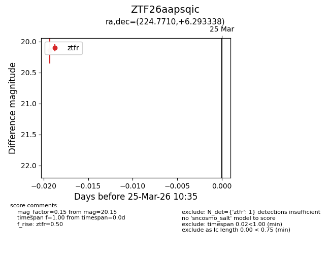
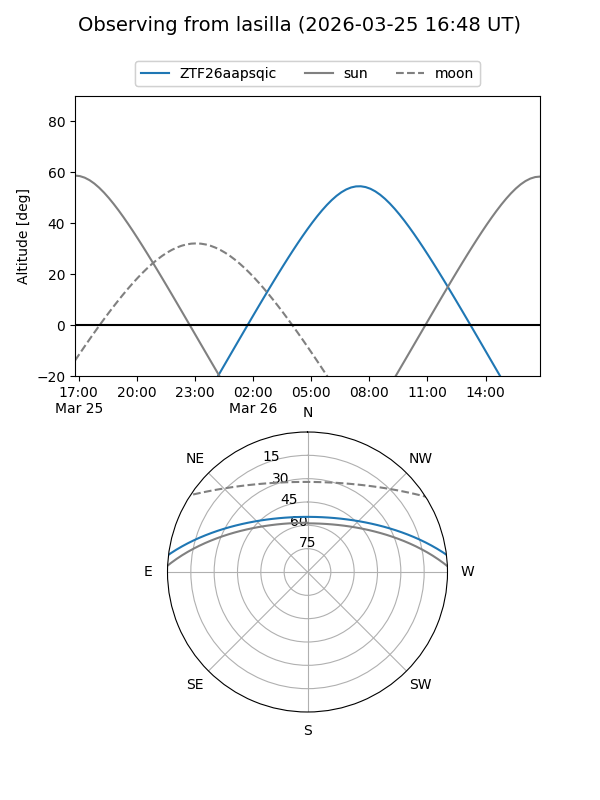
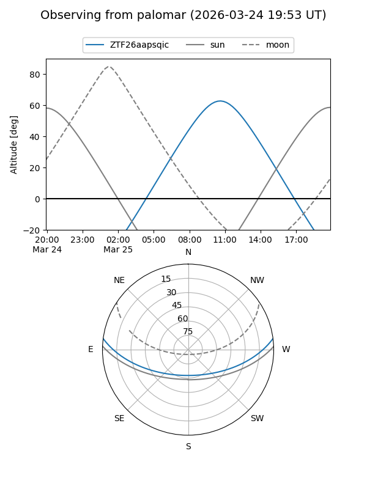

ZTF26aapsqic
Target ZTF26aapsqic at 2026-03-25 10:38
Aliases and brokers:
FINK: link
Lasair: link
ALeRCE: link
alt names
ZTF26aapsqic (ztf,fink_ztf)
Coordinates:
equatorial (ra, dec) = 224.7710,+6.29334
equatorial (HMS+DMS) = 14:59:05.03,+06:17:36.02
galactic (l, b) = (4.2725,+53.21728)
Flags:
Photometry:
last ztfr=20.15
1 ztfr detections
Lightcurve

Visibility


Additional plots